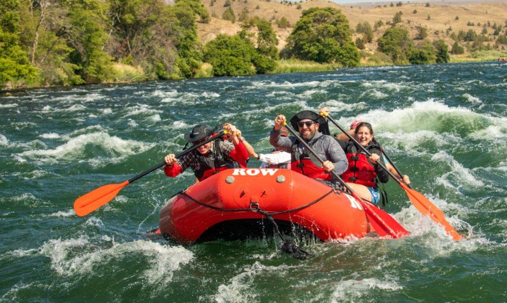
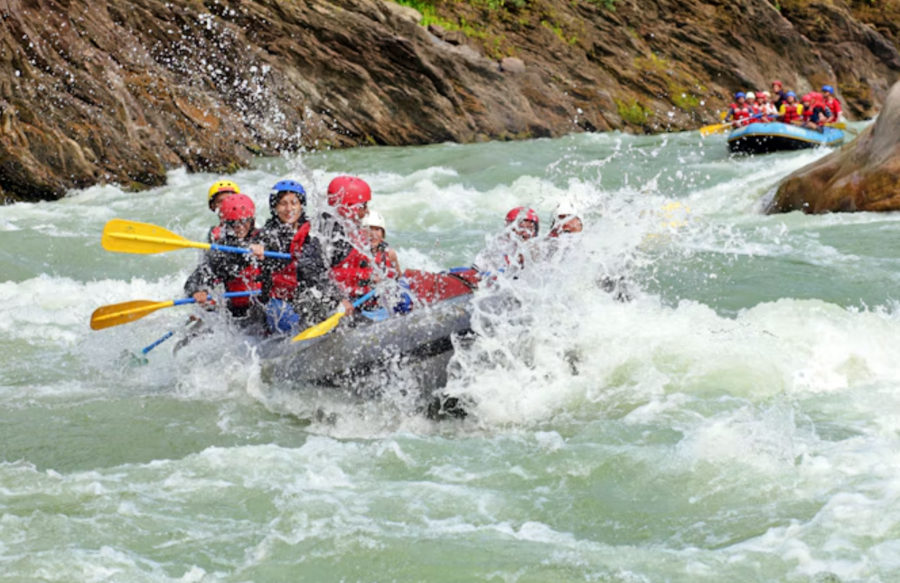
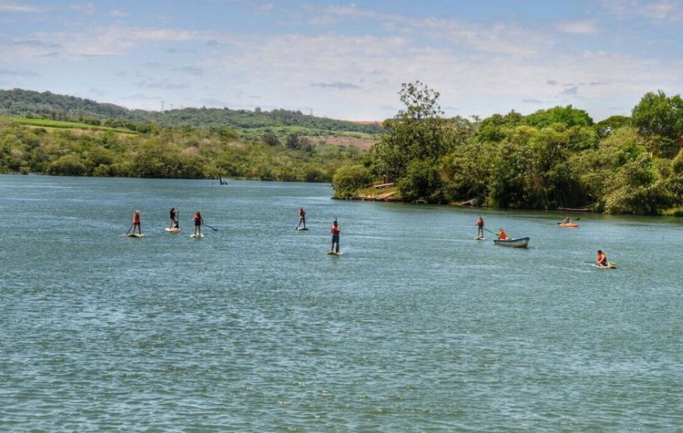
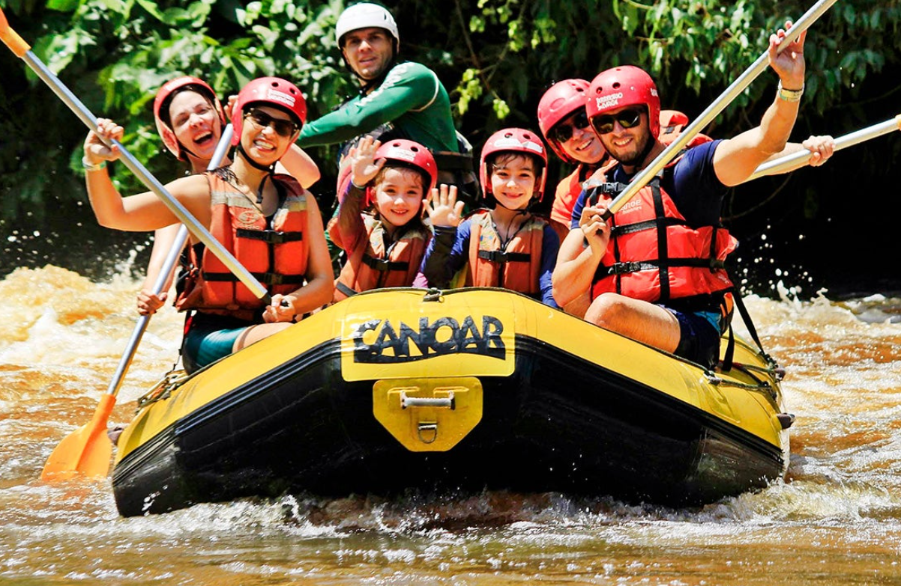

Nossa missão é proporcionar experiências inesquecíveis de rafting, unindo aventura, segurança e contato com a natureza. Nossa equipe é preparada para oferecer momentos emocionantes e seguros para todos os participantes.


Nossa missão é proporcionar experiências inesquecíveis de rafting, unindo aventura, segurança e contato com a natureza. Nossa equipe é preparada para oferecer momentos emocionantes e seguros para todos os participantes.

A Aventura nas Corredeiras nasceu da paixão pela natureza e pelos esportes de aventura. Nosso objetivo é compartilhar a emoção das águas correntes, oferecendo passeios para pessoas que desejam viver experiências diferentes, superar desafios e criar boas lembranças.
Prepare-se para sentir a emoção das corredeiras! Venha conhecer nossos passeios e viver uma experiência cheia de diversão, aventura e contato com a natureza.



